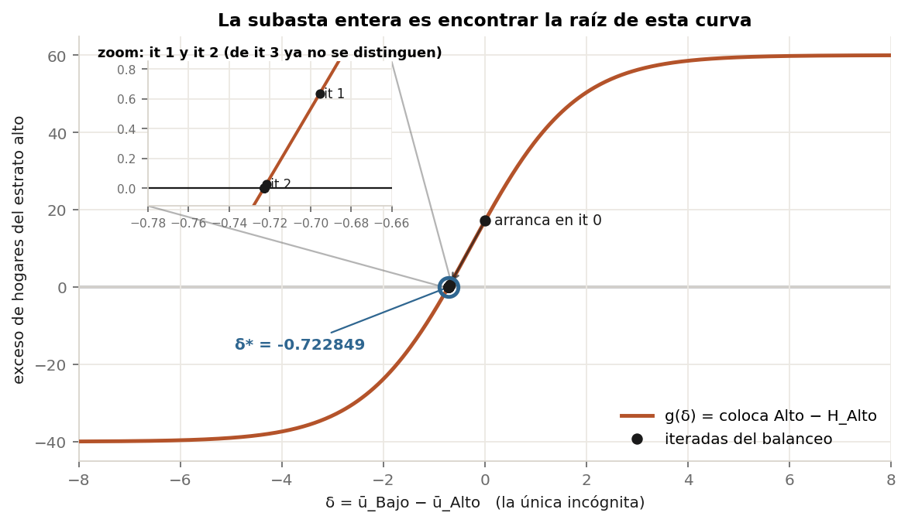
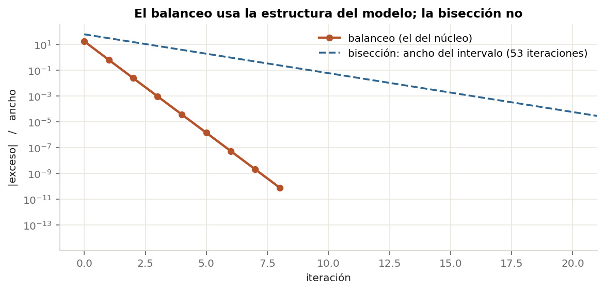
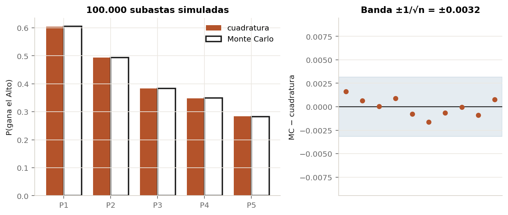
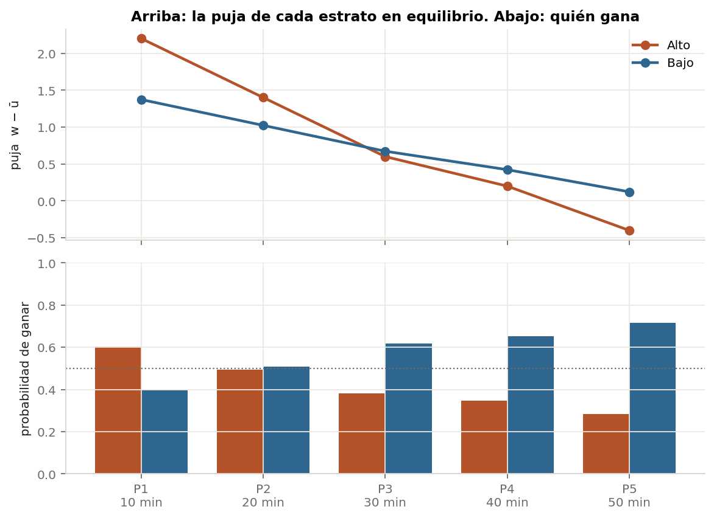
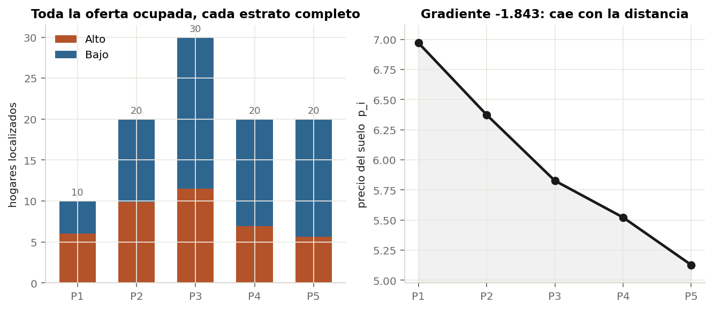
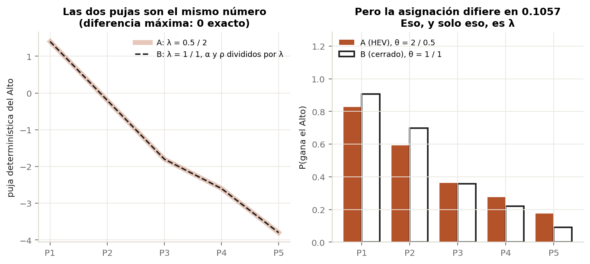

Dos estratos, cinco parcelas. El equilibrio de la subasta heteroscedástica reducido a una ecuación escalar en una incógnita, resuelto paso a paso, dibujado, y verificado contra tres cosas independientes: un algoritmo distinto, el núcleo de producción, y la subasta simulada hogar por hogar.
Este documento existe porque «el modelo converge» no es una demostración de nada. El módulo de uso de suelo resuelve un punto fijo sobre doscientas parcelas y tres estratos, y lo único que se ve del lado de afuera es un mapa que parece razonable. Si el algoritmo estuviera convergiendo al lugar equivocado, el mapa también parecería razonable.
La forma de salir de eso es achicar el problema hasta que quepa entero en una hoja, resolverlo por métodos que no compartan supuestos, y comprobar que dan el mismo número. Eso es lo que hay acá.
Dos estratos —Alto y Bajo— pujan por cinco parcelas alineadas a 1, 2, 3, 4 y 5 km del centro, a 10 minutos por kilómetro. Nadie elige dónde vivir: cada parcela se la lleva quien más puja, y las pujas llevan un término aleatorio.
| parcela | P1 | P2 | P3 | P4 | P5 |
|---|---|---|---|---|---|
viviendas S_i | 10 | 20 | 30 | 20 | 20 |
minutos al CBD T_i | 10 | 20 | 30 | 40 | 50 |
| estrato | H_h | y_h | α | ρ | λ | θ = 1/(βλ) |
|---|---|---|---|---|---|---|
| Alto | 40 | 3 | 0,060 | 0,020 | 1 | 1 |
| Bajo | 60 | 1 | 0,030 | 0,005 | 1 | 1 |
Los valores están elegidos para poder leerlos, no para ser realistas: todo en unidades de utilidad directamente. Con ingresos de verdad las pujas difieren en 10⁶ y no se puede ver nada en un gráfico.
La oferta total (100 viviendas) iguala a la demanda total (100 hogares), y
tiene que ser así. El equilibrio pide que cada estrato
coloque exactamente sus hogares, Σ_i S_i·Q_{h/i} = H_h. Sumando
sobre h, y como las columnas de Q suman 1, queda
Σ_i S_i = Σ_h H_h. Si los datos no cumplen eso, el sistema no
tiene solución — no es una elección del caso de juguete.
La puja determinística es w_hi = y_h + f_h(i)/λ_h, con
f_h(i) = −α_h·T_i − ρ_h·dens_i. Con estos datos da:
puja w_hi | P1 | P2 | P3 | P4 | P5 |
|---|---|---|---|---|---|
| Alto | +2,2000 | +1,4000 | +0,6000 | +0,2000 | −0,4000 |
| Bajo | +0,6500 | +0,3000 | −0,0500 | −0,3000 | −0,6000 |
Pendiente media por parcela: Alto −0,6500 · Bajo −0,3125.
El estrato alto puja más fuerte cerca del centro y su puja cae más rápido con la distancia. Eso es el gradiente de Alonso, y conviene notar que está metido en los datos —en que α y ρ del alto son mayores—, no impuesto en la solución. Si el resultado sale con el alto cerca del centro, no es porque el solver lo haya decidido.
El problema parece tener dos incógnitas, ū_Alto y
ū_Bajo, y dos ecuaciones de equilibrio. Tiene una de cada
una, y verlo es lo que hace que todo lo demás se pueda dibujar.
Sumarle 5 a las dos utilidades no cambia ninguna probabilidad, porque
ū entra únicamente por diferencias. Medido:
max |Q(ū) − Q(ū+5)| = 2.22e-16
Es decir, cero en doble precisión. Por eso el núcleo normaliza con
u_new -= u_new[0]. Queda un grado de libertad:
δ = ū_Bajo − ū_Alto.
La suma de los hogares colocados es siempre la oferta total, valga lo
que valga ū. Así que la segunda ecuación no dice nada que la
primera no diga ya:
| δ | coloca Alto | coloca Bajo | suma |
|---|---|---|---|
| −4,0 | 2,625909 | 97,374091 | 100,0000000000 |
| −1,0 | 33,802763 | 66,197237 | 100,0000000000 |
| 0,0 | 57,198135 | 42,801865 | 100,0000000000 |
| +1,0 | 77,899313 | 22,100687 | 100,0000000000 |
| +4,0 | 98,568815 | 1,431185 | 100,0000000000 |
La última columna es 100 exacto en todos los casos. Una ecuación escalar, una incógnita. Eso es la subasta entera.
Definimos g(δ) = (hogares que coloca el Alto) − 40. Su raíz es el
equilibrio, por construcción. Y como el problema quedó en una dimensión, se
puede dibujar entera:

Conviene detenerse acá, porque es la pregunta que este documento se saltea si
uno no la hace: ¿en qué momento se resuelve el HEV? La respuesta es
contraintuitiva — en ninguno en particular. No hay un «paso
del HEV». El HEV es la operación más interna, y se resuelve
entero cada vez que se pide un valor de g.
La cadena de llamadas es literalmente esta:
exceso(δ) ← un punto de la curva de arriba
└─ colocados(ū) ← Σ_i S_i·Q_{h/i}
└─ q_hev(loc, θ) ← ACÁ. El logit heteroscedástico entero, una vez.
└─ _PESO @ z ← la cuadratura: 401 nodos
O sea que cada punto de la Fig. 01 es un logit heteroscedástico
completo, con su integral resuelta por cuadratura sobre los 401 nodos,
para las cinco parcelas y los dos estratos. Contado con un contador puesto
sobre q_hev (cuenta.py):
| HEV resueltos | evaluaciones del integrando | |
|---|---|---|
una sola evaluación de g(δ) | 1 | 4.010 |
| el balanceo entero (8 iteraciones) | 17 | 68.170 |
| la bisección (53 iteraciones) | 55 | 220.550 |
| la curva dibujada en la Fig. 01 | 802 | 3.216.020 |
Buena parte de la confusión viene de que la frase significa dos cosas, y este documento trata sólo la segunda:
q_hev y lo que explica
La cuadratura del HEV, en imágenes.
Acá entra como caja negra.
ū que hace
que cada estrato coloque exactamente sus hogares? Eso sí es un
problema de punto fijo, y es lo que resuelven las §4 y §5.
El (1) no es iterativo: es una integral, y con 401 nodos da el resultado a precisión de máquina de una sola pasada. El (2) sí es iterativo, y llama al (1) en cada paso. Anidados, no en secuencia.
Vale la pena ver el orden de magnitud: dibujar esa curva costó tres millones de evaluaciones del integrando, y resolver el equilibrio costó 68.170 — cuarenta y siete veces menos. El gráfico es mucho más caro que la respuesta. Por eso el núcleo no tabula nada: va directo a la raíz.
Volviendo a la curva, dos cosas que deja ver de una:
[−6, 6]. Subir ū_Bajo baja la puja del estrato bajo,
así que el alto gana más. Al ser monótona, la raíz es única:
no hay equilibrios múltiples que discutir, y cualquier método que la busque
tiene que llegar al mismo lugar.
El núcleo no busca la raíz con un método genérico: usa un balanceo multiplicativo sobre la condición de equilibrio,
La lectura es directa: si un estrato coloca de más, su ū sube, su
puja baja y coloca menos. Lo que no es obvio es por qué el logaritmo:
es lo que hace que el paso tenga el tamaño correcto en vez de ser una constante
arbitraria. En el caso homoscedástico este esquema es exactamente el
punto fijo de la forma cerrada, escrito de una manera que no necesita despejar
ū de adentro del logaritmo — que es justo lo que no se puede hacer
cuando no hay forma cerrada.
| it | δ | coloca Alto | exceso | paso |
|---|---|---|---|---|
| 0 | +0,00000000 | 57,1981 | +1,72e+01 | −6,95e−01 |
| 1 | −0,69540474 | 40,6349 | +6,35e−01 | −2,64e−02 |
| 2 | −0,72179162 | 40,0244 | +2,44e−02 | −1,02e−03 |
| 3 | −0,72280868 | 40,0009 | +9,40e−04 | −3,92e−05 |
| 4 | −0,72284784 | 40,0000 | +3,62e−05 | −1,51e−06 |
| 5 | −0,72284935 | 40,0000 | +1,39e−06 | −5,81e−08 |
| 6 | −0,72284941 | 40,0000 | +5,37e−08 | −2,24e−09 |
| 7 | −0,72284941 | 40,0000 | +2,07e−09 | −8,62e−11 |
| 8 | −0,72284941 | 40,0000 | +7,96e−11 | — |
El error se divide por unas 26 en cada iteración: convergencia lineal con factor ~0,038. Ocho iteraciones para llegar a 10⁻¹¹. Fijate que la columna «coloca Alto» ya dice 40,0000 desde la iteración 3 — a partir de ahí lo único que se está afinando son decimales que ningún resultado del modelo va a mostrar. La tolerancia estricta no es para el resultado: es para que el punto fijo exterior del modelo acoplado no herede ruido.

ū— y la bisección sólo sabe leer un signo.
Este demo arranca de ū = 0. El núcleo arranca del equilibrio de
la forma cerrada, porque con ingresos de millones las pujas difieren en 10⁶,
Q satura en [1, 0] y el balanceo se queda sin
dirección: el logaritmo de la razón es enorme y constante. Acá los números
son chicos y no hace falta — lo que muestra, de paso, que el warm start es
una necesidad numérica y no parte del modelo.
Que el balanceo converja sólo dice que encontró un punto fijo suyo. Para saber que ese punto es el equilibrio hacen falta métodos que no compartan nada con él.
Bisección pura sobre g. No usa el gradiente, ni el logaritmo del
paso, ni la estructura del modelo: sólo que g cambia de signo.
Está implementada a mano —partir el intervalo al medio 53 veces— para que se
vea que no hay ningún truco adentro.
| método | δ* | iteraciones |
|---|---|---|
| balanceo (el del núcleo) | −0,72284941344892 | 8 |
| bisección | −0,72284941345237 | 53 |
| diferencia | 3,45·10⁻¹² | — |
Coinciden en once decimales. El punto fijo del balanceo es la raíz de la ecuación de equilibrio, no un artefacto del esquema iterativo.
El demo reimplementa la matemática desde cero y no importa nada
de titirilquen_core — si lo hiciera, estaría demostrando que el
núcleo es consistente consigo mismo, que no prueba nada. El paso 6 es el único
que importa el núcleo, y sólo para comparar:
δ* demo = -0.722849413452
δ* núcleo = -0.722849413363
diferencia = 8.96e-11
max |Q_demo - Q_núcleo| = 2.24e-11
Las dos implementaciones coinciden hasta la tolerancia del solver
(1e-10 acá, 1e-8 en el núcleo). Dos personas
escribiendo el mismo modelo desde el papel llegan al mismo número.
La verificación más fuerte, porque no usa ninguna fórmula. Se corren 100.000 subastas: en cada una, cada uno de los 40 hogares del estrato alto y de los 60 del bajo saca su propio ruido Gumbel y puja, y la parcela se la lleva el hogar con la puja más alta. Después se cuenta con qué frecuencia gana cada estrato.

Verifica también el corrimiento θ_h·ln(H_h), que es la parte de
la formulación más fácil de escribir mal. La cuadratura lo usa como fórmula;
la simulación saca las H_h pujas una por una y nunca la
usa. Que den lo mismo confirma que el máximo de H_h
Gumbel de escala θ_h es Gumbel con la localización corrida en
θ_h·ln(H_h), que es de dónde sale ese término.
Con los θ iguales, el HEV tiene que reproducir el logit cerrado
exactamente. En el equilibrio del caso base:
Q del Alto P1 P2 P3 P4 P5
HEV (cuadratura) 0.6038864996 0.4929218425 0.3826502053 0.3478928131 0.2832667866
logit cerrado 0.6038864996 0.4929218425 0.3826502053 0.3478928131 0.2832667866
error maximo: 3.33e-16
ū: es la comparación que hace la
subasta. Abajo, la probabilidad de ganar. El alto gana P1 con 0,60 y P5 con
0,28 — nunca con certeza, porque el ruido siempre puede dar vuelta una parcela.

S_i. Derecha: el precio del suelo, de 6,97 en P1 a
5,13 en P5.
El gradiente de precios da −1,843: el suelo vale más cerca del centro. Es el resultado que Alonso predice, y acá se puede afirmar con seguridad de dónde viene, porque en la §1 se vio que la puja del alto cae más rápido con la distancia que la del bajo. La competencia por las parcelas centrales es lo que empuja el precio.
Vale la pena notar que la asignación no es una segregación limpia: el alto gana P1 con probabilidad 0,60, no 1. En una subasta con ruido, ningún estrato se lleva un anillo entero. Los mapas de segregación perfecta que uno ve en los textos de Alonso son el caso sin ruido.
Acá está la razón de haber implementado el HEV, y conviene hacer el experimento
correcto. El experimento incorrecto —el que uno hace primero— es mover
λ y ver si algo cambia. Cambia, pero eso no prueba nada: bajo la forma
cerrada también cambia, porque λ entra en la puja por
score = y + f/λ.
Lo que hay que mostrar es otra cosa: que bajo la forma cerrada ese efecto es indistinguible de re-escalar las preferencias. Se arman dos casos:
| caso | λ Alto / Bajo | α Alto | α Bajo | θ Alto / Bajo |
|---|---|---|---|---|
| A — λ heterogéneo | 0,5 / 2 | 0,060 | 0,030 | 2 / 0,5 |
| B — λ uniforme, α y ρ divididos por λ | 1 / 1 | 0,120 | 0,015 | 1 / 1 |
Por construcción tienen la misma puja determinística —la
diferencia máxima medida es 0 exacto—, pero distinto θ.

La forma cerrada ve únicamente el score — se lee directo en la
firma de _solve_fixed_point, que recibe score,
H, S y un β escalar. Entonces para ella
A y B son literalmente el mismo modelo, y cualquier λ se puede canjear por
preferencias. Eso es la discrepancia D-08: λ no está identificado.
El HEV, en cambio, ve además θ = 1/(βλ), y con eso A y B dejan de
ser el mismo modelo. La distancia media al CBD del estrato alto pasa de 2,399
km (B) a 2,602 km (A). Recién ahí λ significa algo.
El script imprime también un barrido: λ = 1/1, 0,8/1,25, 0,5/2 y 0,4/2,5 (alto/bajo). Ese barrido trae un resultado que vale la pena, y es que al bajar λ del estrato alto el gradiente de precios se empina —de −1,84 a −3,32— y el alto se acerca al centro, de 2,91 a 2,57 km. Es la predicción de Alonso, y sale de la mecánica correcta: con λ bajo un útil vale muchos pesos, así que la desutilidad de acceso le cuesta más dinero al rico, que por eso puja más agresivamente por lo central. Es informativa pero no aísla λ: cada fila cambia el score y el θ a la vez. Lo único que aísla λ es la comparación A vs B, donde el score quedó fijo por construcción. Confundir las dos cosas es exactamente el error que llevó a documentar el efecto de λ al revés durante meses.
θ·ln(H).
cd sandbox/hev-paso-a-paso
uv run python pasos.py # imprime los 10 pasos, escribe salida/traza.json
uv run python figuras.py # dibuja las 6 figuras desde el JSON
pasos.py es determinista salvo el Monte Carlo, que usa semilla 42.
Los archivos: caso.py (los datos), subasta.py (la
matemática, sin importar el núcleo), pasos.py (la corrida),
figuras.py (los gráficos).